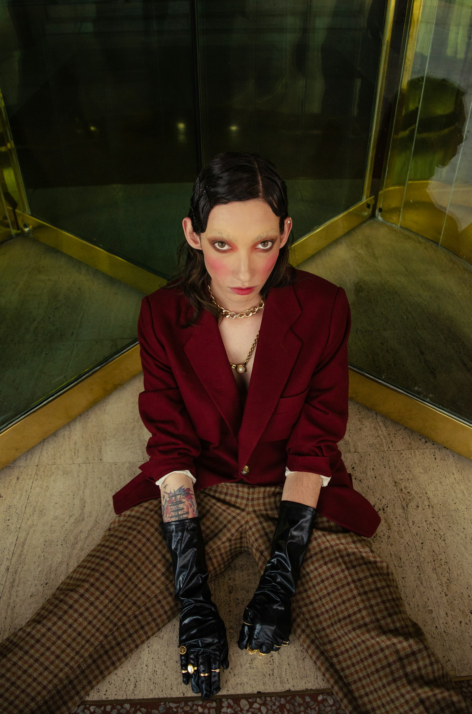
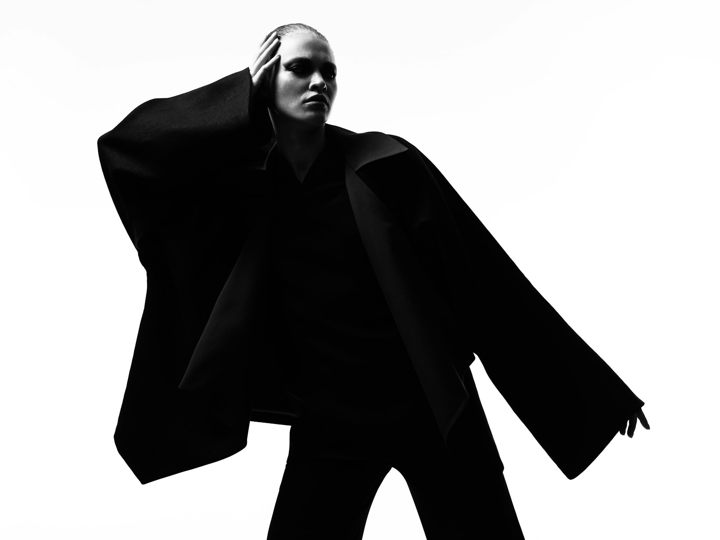
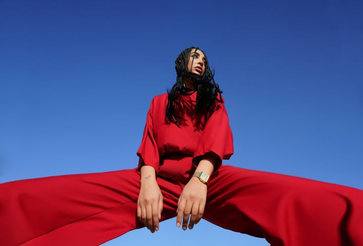
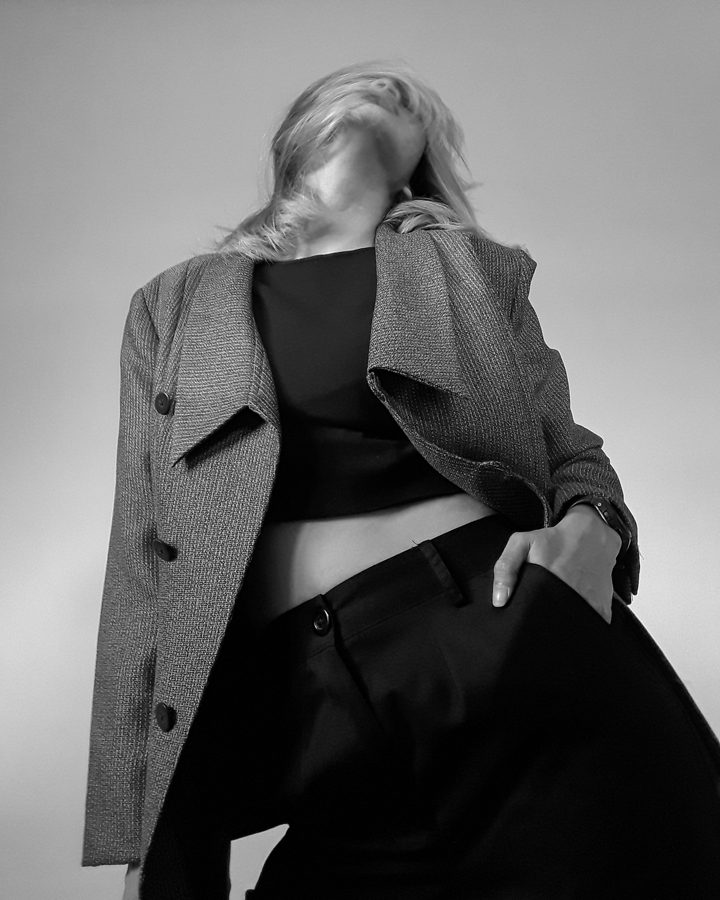

NOTE / 01 PLANNING A SHOOT
Before the first frame.
The most useful thing to bring to a shoot isn’t a perfect moodboard. It’s a clear idea of what the images need to do.

Start with where the image will live.
A website introduction, a new collection, and a personal portrait ask different things of a photograph. Before talking about a location or a lighting reference, name the purpose. Who will see the image? What should they notice? What should they understand about the person or brand in it?
Be specific about the places it will appear. A wide website banner needs a different composition from a vertical cover. If text will sit over the photograph, say so early. A simple list of placements can prevent a beautiful frame from becoming a difficult crop later.
01 / THE PEOPLE BEHIND THE FRAME

A finished image begins with several points of view. Share the purpose with everyone shaping the shoot, from styling to light.
Choose a feeling. Explain the references.
Three considered references are often more useful than thirty disconnected ones. With each image, write down what you respond to: the warmth of the light, the distance from the subject, a particular colour, or the sense of movement. You may like the atmosphere of a picture without wanting its styling.
Then give the direction a few plain words. Quiet and tactile. Graphic and direct. Warm and a little imperfect. These words become a way to discuss choices together, especially when the shoot begins to offer possibilities you did not expect.
02 / TWO WAYS TO READ A REFERENCE




Name the quality you respond to. These references offer different starting points: the shape of a silhouette, or the energy of a single colour.
A brief should give the idea a direction, and the people making it room to move.
A NOTE FROM FORME
Put the practical things on one page.
Share the subject, the number of products or people, your preferred timing, and any fixed deadline. Mention what is already arranged and what still needs to be found: location, wardrobe, hair and makeup, props, or a wider creative team. If the budget has a range, include it. A useful plan begins with the actual constraints.
Separate the essential frames from the possibilities. The essential list protects what you need to leave with; the second list gives the team somewhere to explore. Both belong in the conversation, but they do not carry the same weight on the day.
03 / A DETAIL WORTH PLANNING


Wardrobe is part of the composition. A fabric, proportion, or small styling detail can be a useful reference long before shoot day.
Leave a little space in the plan.
A brief is a shared starting point. It does not need to choreograph every gesture or predict every reflection. Once the purpose, mood, and essentials are understood, there is room to notice what the light and subject are doing together.
Bring your questions, too. You do not have to arrive with a fully formed visual language. A half-written idea, explained honestly, is enough to begin a thoughtful conversation.
An original studio note for the FORME website concept. Explore the visual directions or meet the photographers in the image credits.